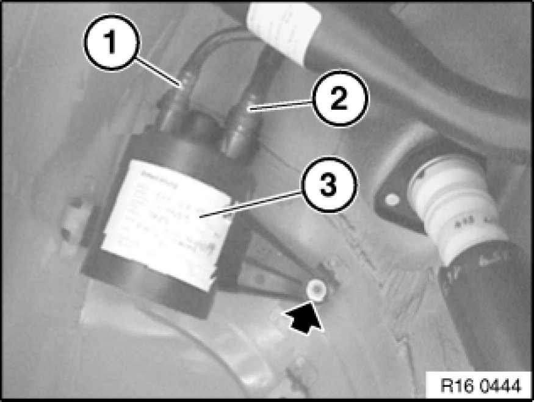

16 12 010 Removing and Installing or Replacing Carbon Canister
16 12 010 - Removing and installing or replacing carbon canister

Necessary preliminary tasks:
- Remove rear right wheel Removing or Installing Front or Rear Wheel.
- Remove rear right wheel arch trim Service and Repair.

Disconnect vent line (1) and (2) from carbon canister (3).
Unfasten nut.
Tightening torque 16 13 2AZ 16 13 Tank Ventilation.
Remove carbon canister (3).